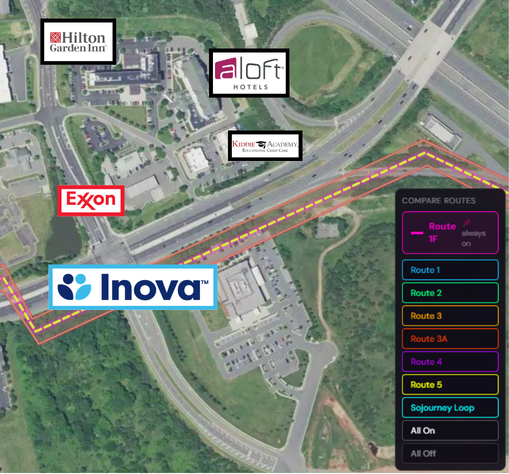
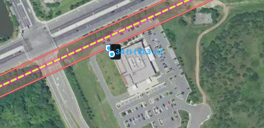
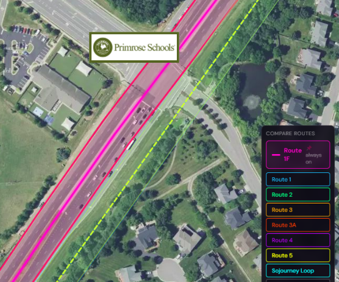
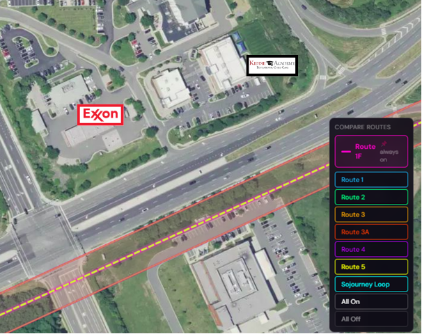
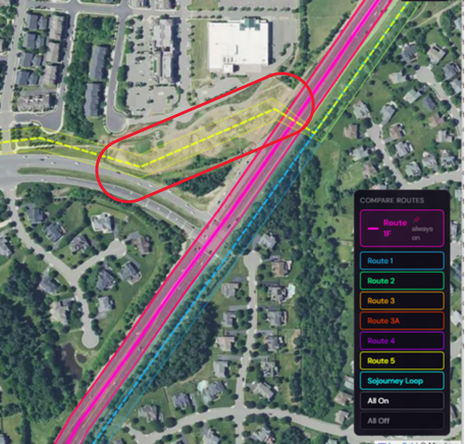
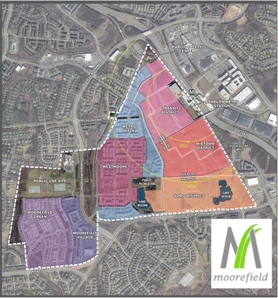
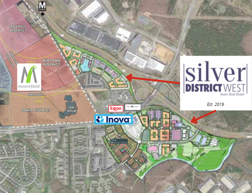

Dominion introduced Route 1F with no engineering, no geotechnical analysis, and no VDOT approval. Their own counsel admitted it is "not under consideration." Their own feasibility study proves it can't be built. It was never a plan — it was a pressure tactic.
See It on the Map ↓Dominion commissioned a Feasibility Analysis for Route 1F along Loudoun County Parkway. The study exhaustively examined underground routing through this stretch and declared it "not constructable." Then Dominion proposed overhead through the exact same corridor — and never explained how the same constraints disappear when you build above ground instead of below it.
The Underground Feasibility Study identified the following constraints along Loudoun County Parkway as grounds for declaring underground Route R3 "not constructable":
The study concluded that this infrastructure would require "significant service disruption and relocations" and that the route "has been determined to not be constructable for this project."
Yet every one of these constraints applies equally to overhead construction. Installing tower foundations requires augering massive caissons deep into the same earth where those utilities sit. The conflict with existing underground infrastructure does not disappear because the Company proposes to build above ground rather than below it — it is the same conflict, encountered from above instead of from the side.
A 185-foot 500kV monopole is not a telephone pole. Dominion's own structure boards specify a crossarm width of 56 feet. The median they want to put it in is 16 to 22 feet wide mid-block — and narrows to 4 to 6 feet at intersections.
Each structure requires a drilled-pier concrete foundation typically 8 to 12 feet in diameter, extending 30 to 50 feet into the earth. The Company's own feasibility study identified water, sewer, and fiber optic utilities that both cross and run parallel to Loudoun County Parkway — citing this infrastructure as a constraint requiring "significant service disruption and relocations."
At intersections, the foundation alone would not fit within the available space without removing turn lanes and crippling traffic throughput for the 280,000 residents in the service area.
VDOT regulations require a clear zone — an unobstructed, traversable roadside area — of approximately 20 to 30 feet from the edge of the travel lane for a 45–55 mph arterial. A monopole in a 20-foot median would sit approximately 10 feet from the travel lanes on either side — a direct violation of these safety standards, creating fatal collision hazards.
Loudoun County Parkway has already been widened to its current configuration. Residential homes, sound barriers, and shared-use paths back up directly to the VDOT right-of-way on both sides. The distance from the right-of-way to residential property lines is at or near zero in many sections. There is nowhere else to go.
Because Dominion conducted no diligence whatsoever before floating Route 1F, the community had to do it for them. Here is what any responsible applicant would have discovered before introducing a route into a contested proceeding.

Dominion's feasibility study describes it as "a facility providing emergency care services to the public." What it is: the primary emergency stabilization point for over 280,000 residents — 62% of Loudoun County's population.

Route 1F shifts from the median at this point and routes through the HealthPlex parking lot, with the right-of-way beginning less than 35 feet from the building. The facility is a certified Acute Stroke Ready Hospital whose single CT scanner performed 8,267 scans in 2022 — operating at 111.72% of state-standard capacity.
By stabilizing high-acuity patients locally, the HealthPlex prevents the over-saturation of the Level II Trauma Center at Inova Loudoun in Leesburg and ensures life-saving care is available within minutes for the county's most populated area.
500kV transmission lines generate magnetic fields far exceeding the 0.5 milligauss threshold required for medical imaging. The HealthPlex building is approximately 185 by 150 feet, with the majority of medical facilities and emergency operations — including the imaging suite — located in the portion of the building closest to Route 1F.
Electromagnetic interference from 500kV lines does not attenuate to the 0.5 milligauss threshold until approximately 700 to 1,000 feet from the centerline. The HealthPlex is 35 feet away. Published studies have documented that EMF at these levels can cause image artifacts — visual noise or blurring that raises concerns about masking critical findings such as a brain bleed or clot — potentially requiring re-scans and equipment recalibration, and introducing dangerous delays for stroke patients who depend on speed and precision for survival.
The Loudoun County EMS Operations Committee has designated the HealthPlex campus for emergency helicopter transports, with a ground-level landing zone used to transfer critically ill patients to Level 1 Trauma Centers.
Under FAA Part 77 standards, 185-foot structures in the median would likely be classified as hazards to air navigation and could legally necessitate the permanent decommissioning of the facility's helicopter access — stripping the county's most populated region of rapid air-bridge access for severe trauma and acute strokes.
Structures classified as hazards to air navigation would require obstruction lighting — high-intensity white strobes during the day, red flashing lights at night — operating continuously, 24/7, adjacent to apartment complexes and single-family homes.
High-voltage transmission lines are the primary wire-strike hazard for helicopter operations, creating unacceptable risk during high-stress emergency landings, particularly in low-visibility or night operations.
In the event of severe weather, ice loading, or structural failure, the collapse of a 185-foot tower or downing of live 500kV wires onto Loudoun County Parkway would sever the primary emergency access route — preventing ambulances from reaching the HealthPlex or transferring patients out, with potentially catastrophic consequences for the 280,000+ residents who depend on this facility.

A private early childhood education center serving infants through kindergarteners, located adjacent to Loudoun County Parkway. Outdoor activity areas would sit directly next to proposed 500kV transmission structures.

Situated directly across Loudoun County Parkway from the HealthPlex, in the same commercial center as the Exxon gas station. Like Primrose, a private tuition-based facility whose outdoor play areas would be directly adjacent to 500kV structures.
As private tuition-based facilities, their continued operation relies entirely on parental choice. The placement of 500kV lines within feet of classrooms and outdoor play areas could severely impact these businesses — not through a formal taking, but through the market reality that parents will not pay private tuition to place their children in the shadow of high-voltage transmission lines when unaffected alternatives exist.
During the months-long construction phase, heavy crawler cranes and the stringing of high-voltage conductors would operate directly adjacent to active drop-off zones and outdoor play areas.
Situated directly across Loudoun County Parkway from the HealthPlex. High-voltage lines can induce electric currents on large ungrounded metal objects, creating a risk of spark discharge during fuel delivery operations in an environment saturated with volatile compounds. A downed 500kV conductor onto a fuel station with underground storage tanks represents a catastrophic fire and explosion hazard.
The same commercial center also includes the Hilton Garden Inn and Aloft Dulles Airport North — two hotels whose guests and staff would be directly exposed to the construction and permanent presence of 500kV structures.

Approximately 1.25 miles south, the intersection of Loudoun County Parkway and Ryan Road includes a second gas station currently under construction, presenting identical hazards. Dominion's proposed Route 5 is drawn literally through this gas station.
This project was underway before the SCC proceeding began, yet the Company did not adjust its routing — consistent with a pattern of not engaging with the actual realities of the corridor.
Major residential communities along this corridor are either recently completed or currently under construction. These residents and developers have not been notified about Route 1F — because Dominion never intended to build it.

A major mixed-use community with multiple residential districts, directly adjacent to Loudoun County Parkway. Thousands of residents who would be directly impacted by Route 1F have had no opportunity to respond.

A significant residential development currently underway. Like Moorefield, these future residents have not been notified because Dominion never intended to actually build this route — they introduced it from a hearing room in Richmond.
Landowners and developers on the opposite side of Loudoun County Parkway have not engaged more heavily in these proceedings precisely because they believe the Company would never actually construct, and Loudoun County would never allow, a 500kV transmission line down the median of a six-lane arterial road.
That belief is widespread and reasonable — which is itself an indictment of the route's credibility. But when they do realize what is actually being proposed, they will not remain idle. The condemnation challenges, years of litigation, and practical delays already unfolding along other proposed routes would apply with equal or greater force here.
Explore the Route 1F corridor and compare it against all other proposed routes. Toggle layers to see the emergency room, gas stations, childcare centers, and residential communities in the path.
Everything above shows why Route 1F can’t realistically be built. But Dominion has an even bigger problem: Virginia law explicitly prohibits what they proposed.
“Longitudinal pole line installation will not be allowed in the median.”
That’s it. No exceptions. No wiggle room. You cannot run pole lines down the middle of a highway in Virginia. Loudoun County Parkway is a VDOT-maintained highway — and Route 1F would place 500 kV transmission structures right in its median.
Source: Virginia Administrative Code, Title 24, Chapter 151, Part VI — Overhead Utility Installations Within Nonlimited Access Highways
Route 1F would place 185-foot, 500 kV transmission towers longitudinally in the median of Loudoun County Parkway (State Route 607). This isn’t a crossing — it’s towers running down the middle of the road for miles.
Dominion’s own filings confirm this configuration. There is no dispute about what they proposed.
Dominion’s preferred routes — 3, 3A, and 3B — run through neighborhoods, across school grounds, and through backyards. They introduced Route 1F as the scary alternative: “accept towers in your community, or we’ll put them somewhere even worse.”
But Route 1F was never a legal option. It was a pressure tactic dressed up as a real route.
We have asked the State Corporation Commission to find Route 1F prohibited under Virginia law and to reevaluate all remaining routes without it.
Dominion introduced Route 1F into a contested proceeding before the State Corporation Commission with no prefiled testimony, no engineering analysis, and no VDOT approval. Their own counsel later admitted it is "not under consideration." The community had to conduct the analysis the Company never performed.
Dominion's own study said underground won't fit here. Then they proposed overhead through the same corridor — and never explained how. Route 1F exists on paper as leverage, to pressure the community into accepting Routes 3 and 4 through their neighborhoods.
Where, precisely, was an overhead route ever going to go?
Route 1F is just one tactic. Understand the full scope of what Dominion is proposing — and what you can do about it.